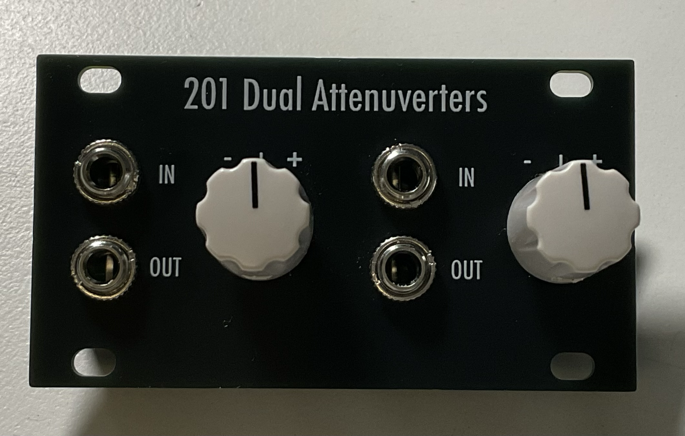

201 Dual Attenuverters

This is the first module in the 2XX series of 1U utility modules
Dual Attenuverters
v0.1
Specifications
| Parameter | Value |
|---|---|
| Width | 14HP |
| Height | 1U Intellijel |
| Depth | ~15mm skiff friendly |
| +12 Current | - |
| -12 Current | - |
| +5 Current | 0mA |
Features
- Dual attenuverters each with an input, output and attenuvert knob
Quirks and Problems
- none